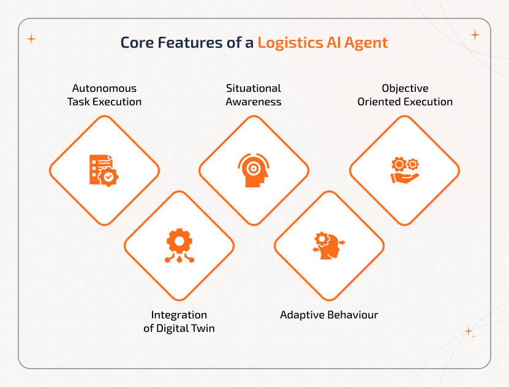
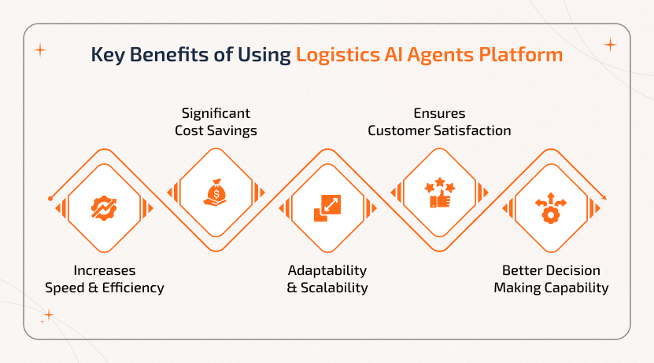
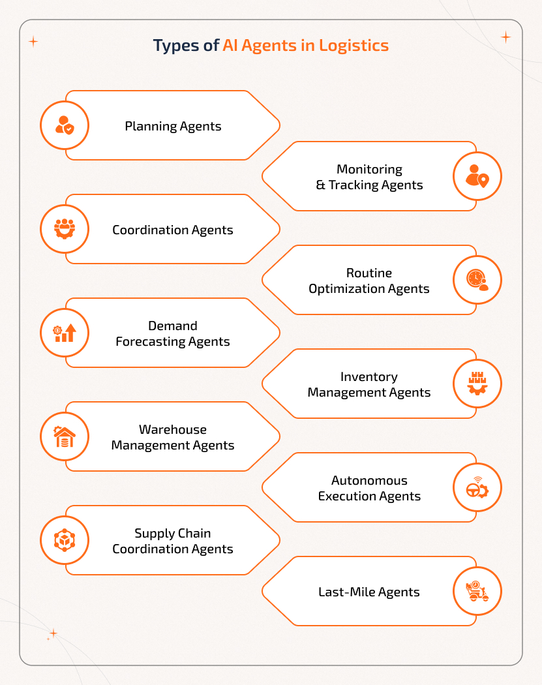
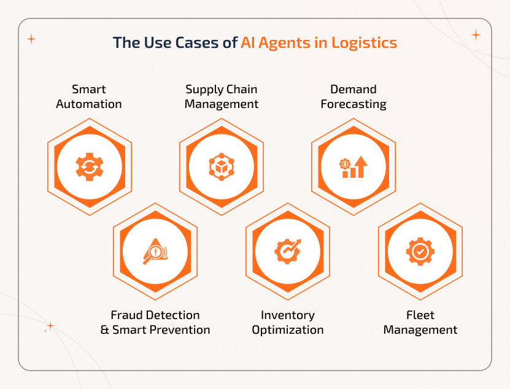
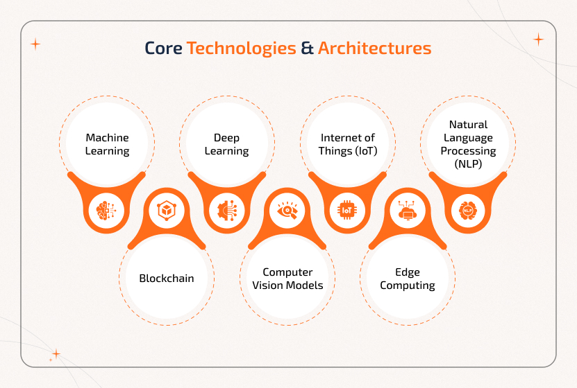
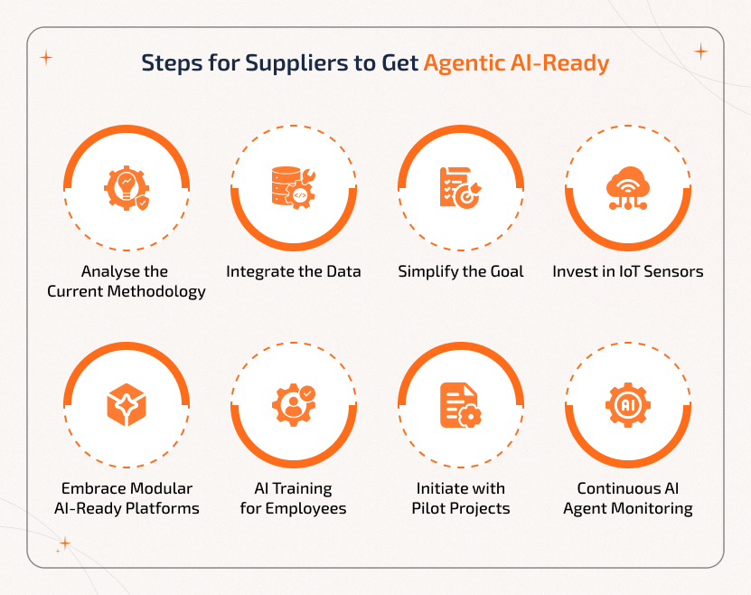

In this digital era, the global logistics sector is experiencing a technological revolution, characterized by innovations in AI, IoT, and blockchain, increasing transparency and sustainability. Logistics AI agent development delivers an advanced software system that leverages Natural Language Processing and Machine Learning to automate tasks for optimal supply chain and logistics operations.
Leverage AI agents if you are looking forward to boosting efficiency, improving resilience, and reducing cost throughout the entire cycle.
Core Features of a Logistics AI Agent
Here are the major features of AI agents in the logistics sector which optimizes and stabilizes the supply chain.

Autonomous Task Execution
Logistic AI agents are specifically designed to undergo certain operations on their own, without the need for humans to track them every time during the process. For example, it initiates tasks including shipment booking, scheduling pickups, and confirming delivery. This autonomy manages the repetitive process and delivers quick responses to operational events.
Integration of Digital Twin
Most of the logistic AI agents make use of the Digital Twin technology, where the virtual imitation of the physical supply chain is maintained in real-time use. By following this methodology, the agents can predict the potential outcomes, test decisions, and simulate real-time scenarios before applying in real-time.
Situational Awareness
The AI agent frequently gathers and stores information from sources like traffic analysis, warehouse systems, and GPS to get a real-time understanding of the environment. The gathered data helps the logistics professional to respond accordingly when times like vehicle breakdown, climate changes, or while in demand shock.
Adaptive Behaviour
Similar to human behaviour, AI agents also learn over time and adapt to current trends. It deeply analyses the outcomes of the previous decisions and redefines the marketing strategies and behaviour.
Objective-Oriented Execution
The AI agent works on the basis of defined logistic objectives, like delivering on time and reducing cost. It utilizes specialized algorithms to execute objectives into action and execute the strategy based on real-time responses and feedback.
Key Benefits of Using Logistics AI Agents Platform
Implementing the AI agents gains vast advantages in the logistics industry. From increasing the workflow to better decision-making, the AI agents contribute to maximum efficiency for business growth.

Increases Speed & Efficiency
By analysing the workflow, AI agent for logistics will automate repetitive tasks like data analysis, day-to-day planning, and order sequence. This frees up some quality work for humankind, enabling them to carry out other logistics work.
Similarly, AI-powered logistics agent analyze the warehouse operation and delivery routes to make the cycle even faster with maximum efficiency.
Significant Cost Savings
Efficient routing and routine tracking technologies implemented by AI agents will reduce the logistics cost by minimizing the fuel consumption. In the meantime, predictive logistics AI tools are used for demand forecasting, which leads to significant cost reduction in inventory management.
Adaptability & Scalability
By analysing the current and predicting the future trends,these agents can adapt to the changes quickly. From rerouting shipments to optimizing inventory, AI agents in logistics make the supply chain more resilient to withstand the market.
Introducing AI agent applications into the domain can maintain the operational efficiency, even if the logistic network develops.
Ensures Customer Satisfaction
The implementation of the AI chatbots and predictive tracking provides customers with real-time updates and extended support. Route optimization using vehicle tracking systems results in quicker and more reliable deliveries. This satisfies the customer’s needs and enhances logistics’ overall experience.
Better Decision-Making Capability
Utilizing AI agents in the logistics sector helps in decision-making even better. By taking advantage of the Machine Learning capability and implementing advanced AI tools can help predict the possible outcome and identify potential risks before moving to large-scale development.
Our apps embedded with advanced AI technologies can understand the business needs and assist accordingly.
Types of AI Agents in Logistics
In logistics territory, AI agents can be divided and assembled based on the functions, nature of work, and real-time applications. These agents utilize Machine Learning, IoT, Deep Learning, and other essential technologies to enhance the workflow in logistics operations. Some of the major AI agents in the logistics sector are listed below.

1. Planning Agents
The planning AI agents in the logistics sector are responsible for delivering optimal plans based on the objectives. These agents handle tasks like resource allocation, shipment scheduling, and route planning.
2. Monitoring & Tracking Agents
These agents continuously monitor the operations carried out by logistics and keep track of the goods and shipments. These agents detect anomalies and trigger the alerts or take respective actions.
3. Coordination Agents
Coordination agents play a vital part in the logistics industry by managing and synchronizing a wide range of entities and processes across the supply chain to ensure error-free operation.
4. Routine Optimization Agents
Routine optimization agents ensure that transportation and delivery routes are planned and adjusted to the minimal costs, reduce delivery time, and enhance the overall efficiency in logistics.
5. Demand Forecasting Agents
By analysing the customer feedback and understanding the current trends, demand forecasting agents predict the future customer needs and other relevant factors. This enables businesses to make the right decisions and aids in industry growth.
6. Inventory Management Agents
Optimizing the stock levels is crucial in logistics. Overstocking or understocking leads to tied-up capital, customer dissatisfaction, and leads to potential loss in the business. To rectify this scenario, inventory management agents regularly maintain optimal stock levels at the right time and right place across the supply chain management.
7. Warehouse Management Agents
Warehouse management agents are designed to optimize and automate a wide range of operations within the warehouse. The core responsibility of these agents is to enhance the efficiency, productivity, and accuracy in handling the goods within the storage unit.
8. Autonomous Execution Agents
Unlike other AI agents, autonomous execution agents are responsible for carrying out the logistic tasks independently with no human intervention. Their core responsibility is to execute, monitor, and adapt operational tasks in real-time for efficient logistics execution.
9. Supply Chain Coordination Agents
This AI-powered logistics platform is specifically designed to manage interactions among various stakeholders within the supply chain. Implementing this agent ensures a smooth information flow, resource optimization, and decision alignment in the logistics network.
10. Last-Mile Agents
Finally, the last-mile agents are responsible for enhancing the end part of the delivery process. Alongside AI, these logistics agents optimize the route efficiency, delivery accuracy, and customer experience in last-mile operations.
The Use Cases of AI Agents in Logistics
AI agents have already set its foot on every domain, where logistics isn’t exceptional. From smart automation to fleet management, AI agentsI use cases in logistics are applied across the domain to enhance speed, accuracy, and adaptability in the supply chain.

Smart Automation
Logistics automation AI agent help in the logistic industries by automating the warehouse operations, including sorting, bagging, and placement of the goods for better storage layouts. Similarly, it also enhances the delivery routes based on weather and traffic conditions to deliver the product without time delay.
Fraud Detection & Smart Prevention
Potential frauds in the logistics domain are driven by digital vulnerabilities, inadequate verification, and lack of transparency. On the contrary, AI agents detect anomalies in transactions and documentation to detect and safeguard the data within the supply chain.
Supply Chain Management
The Supply Chain Management (SCM) is the core component of the entire logistic flow, as it oversees end-to-end production, sourcing, warehousing, and others. With the implementation of AI agents, logistics has revolutionized SCM by predictive equipment maintenance, automated evaluation, and it even modifies sourcing strategies.
Inventory Optimization
Using predictive analytics for real-time demand forecasting, AI agents help in the strategic balance of stock levels that meet the customer needs. In the meantime, it optimizes both costly stockouts and wasteful overstocking of the goods and achieves the goal at low cost.
Demand Forecasting
By blending the Machine Learning algorithms with the latest AI tools, small-scale industries and large enterprises can now predict the future demand with maximum accuracy. This approach enabled business to respond proactively to market changes to reduce overstocking and helps in balancing the supply chain.
Fleet Management
Besides being useful inside the warehouse, AI agents also expand its usage in fleet control management. It regularly monitors the vehicle’s performance and forecasts the maintenance needs and schedule interventions to avoid potential breakdown and to extend the lifespan.
Core Technologies and Architectures
For a reliable integration and optimization of AI agents in logistics, core technologies and architectures are the necessary aspects. With the proper implementation, these technologies enable better control over the supply chain management.

1. Machine Learning
Machine Learning (ML) is one of the core technologies implemented in logistic AI agents that helps to learn from the historical data to enhance decision making. ML models help AI agents to adapt to evolved logistics, environment, and patterns.
- Predicts the future order volumes based on past scales.
- Forecasting the warehouse space requirements by season.
- Optimizing delivery times by gathering the traffic data.
2. Deep Learning
Deep Learning in AI-driven logistics helps in processing unstructured data, including images, videos, and voice lines. In the logistics domain, Deep Learning is primarily used for package recognition, automated quality control, and voice-assisted warehouse operations.
- Detecting damaged packages using the warehouse cameras.
- Object recognition during drone-based delivery.
- Voice command translation in warehouses.
3. Internet of Things (IoT)
IoT plays a vital role in logistic AI agents by connecting the physical logistic assets like warehouses and containers to digital systems. The AI agents make use of IoT sensor data for real-time tracking, temperature control, and vehicle maintenance.
- GPS sensors are used to track the vehicle locations for faster routing.
- Implementation of RFID tags tracks movements within the warehouse.
- IoT temperature sensors monitor fragile goods while transporting.
4. Natural Language Processing (NLP)
The NLP technology enables the Logistic AI agents to understand and respond to human language. It is mostly used in chatbots, voice assistants, and document analysis in logistics supply chains.
- Understanding and solving user’s queries using NLP friendly AI chatbots.
- Automatic translation of international shipping documents.
- Enabled voice-controlled system in warehouses.
5. Blockchain
The Blockchain architecture provides a secure and transparent platform for managing logistic data among other entities. AI agents utilise Blockchain for smart contracts which fosters trust and transparency in the supply chain.
- Verifying the supplier’s details during purchasing.
- Automating payments after the delivery confirmation using smart contacts.
- Recording shipment data for end-to-end traceability.
6. Computer Vision Models
This technology enables the logistics AI agents to understand and process the visual data from sensors and cameras. This helps in boosting the speed, accuracy, and automation within the warehouse delivery operations.
- Pointing the delivery packages on the conveyer belt for machine pickers.
- Scanning barcodes and labels in high speed solution centers.
- Keep in track of the warehouse shelves for out-of-stock items.
7. Edge Computing
Edge Computing reduces latency and dependence on cloud-computing. So, AI agents can process data locally, near to where it is generated. This is essential for warehouse robots and autonomous vehicles that need real-time decisions.
- Embark decision making for autonomous delivery drones.
- Process sensor data on forklifts for safety alerts.
- Real-time fleet management.
How Does AI Agent Transform Logistics Providers and Customers
Basically, AI agents act proactively and autonomously alongside the business needs to achieve the specific goal. In the logistic industry, these AI agents improve the efficiency, response, and personalization, which develops a significant value for both providers and customers.
For Logistics Providers
AI agent boosts logistics providers to automate core tasks including, vehicle routing, warehouse operations, and inventory control. These specialized agents make real-time, data-driven decisions which can improve the overall efficiency and reduce significant costs. In the meantime, they also enhance visibility by monitoring the operations continuously and proactively resolve interferences. These enhancements in the logistics domain support business growth without requiring more manpower.
For Logistics Customers
Similar to providers, AI agents improve the customer experience through quick deliveries, and real-time updates. The smart system analyzes traffic routes, delivery windows, and preferences to ensure precise ETAs and lower the delay. Customers on the other hand receive instant alerts and delivery status updates, builds trust and improves satisfaction.
Steps for Suppliers to Get AI Agent Ready
To keep the AI agent ready, the suppliers must digitize operations by integrating smart technologies, and prepare systems for autonomous decision making. Here’s the detailed steps a logistician should carry on for seamless collaboration with AI agents across the supply chain.

Step 1: Analyse the Current Methodology
Initially, check the current flow of operation and investigate areas where the existing supply chain structures can be used to get the AI agent ready.
Step 2: Integrate the Data
Gather data from different logistics departments including, inventory, delivery, and warehouse and assemble a unified, accessible system.
Step 3: Simplify the Goal
The next step is explaining the goal in simple terms in NLP about what the industry needs the AI agent to distribute.
Step 4: Invest in IoT Sensors
Implement IoT (Internet of Things) devices like GPS trackers, RFID tags, and other sensors in the logistic sectors to provide real-time visibility for AI agents.
Step 5: Embrace Modular AI-Ready Platforms
Select software systems that are modular and AI-compatible (TMS, SAP, SCM), which allows quick integration of AI agents.
Step 6: AI Training for Employees
Prepare the logistics employees to work with the AI agents by giving training with AI tools, automated workflows, and data interpretation.
Step 7: Initiate with Pilot Projects
Start with testing the AI agent in small areas like demand forecasting, warehouse optimization, and route tracking before implementing in the full-scale operation.
Step 8: Continuous AI-Agent Monitoring
Monitor and evaluate the performance of the AI agent, collect feedback, and retrain models to expand the use cases throughout the supply chain.
We build custom logistics AI apps with low cost for both mobile and web platforms simplifying your daily routine.
Challenges in Implementing Logistics AI Agents
Asides the potential advantages, implementing AI agents in the logistics domain comes with technical and operational challenges. These issues must be addressed thoroughly for a successful deployment and scaling.
1. Defective Data Quality
AI agents rely on accurate real-time data to carry out the autonomous process. On the contrary, many logistics systems suffer from outdated or inconvenient data sources. Defective or false data limits the AI performance and leads to making false decisions.
2. High Initial Investment
The initial investment is the core factor that many logistic industries face while implementing AI agents, especially for small or mid-sized suppliers. Ai in logistics requires significant cost in infrastructure building, developing software, AI training, and others.
3. Lack of AI Workforce
A lot of logistics companies face a shortage of employers with AI talent needs, including knowledge in Data Science, Machine Learning, and IoT. In the absence of skilled employees, it’s quite challenging to deploy and organize AI agents efficiently.
4. Scalability & Maintenance Issues
Once the AI agent has been deployed successfully, it requires regular updates, maintenance, and effective retraining to keep the efficiency in a stable condition. Scaling AI agents across multiple platforms will bring challenges cost and performance.
5. Cybersecurity Risks
AI agents will possess the full authority to access customer’s sensitive data for official purposes. In the meantime, lack in cybersecurity measures will create potential vulnerability, specifically when sharing the information across partners within the supply chain.
Emerging AI Agent Trends in Logistics Shaping the Future
Being a current backbone of the logistics domain, AI in logistics and supply chain management will analyse the future trends and continue to grow along the business operation. Some of the predicted trends includes:
- Autonomous Decision Making: In the mere future, AI agents are marching forward, and might take full control of logistics decisions. This enhancement will drastically reduce reliance on human oversight.
- IoT Integration for Hyper-Aware Logistics: The inclusion of advanced IoT tools enables faster responses to real-time conditions.
- Cross Functional Communication: Logistics in the future will rely on AI agents that communicate and coordinate across systems, optimizing the global supply chains.
- Increased Sustainability: The futuristic AI agents will support greener solutions by reducing waste and minimizing carbon emission.
- Adaptive Systems: AI agents will continuously learn from the data that have already been provided and improve over time. It can handle complex challenges without manual reprogramming and enhancing supply logistics using AI agents.
Conclusion
This informative guide showcases the benefits, use cases, applications, core technologies, and other relatable information through the implementation of AI agents in the logistics sector. In this era, AI agents are revolutionizing supply chain operations by enabling real-time analysis, decision making, and end-to-end automation.
By optimizing the routes, managing inventory, and organizing the warehouse, AI agents help in significant cost reduction and improve resilience. Besides being just a competitive advantage, they’re evolving as strategically necessary for future-ready supply chains when the logistics sector becomes more complex.